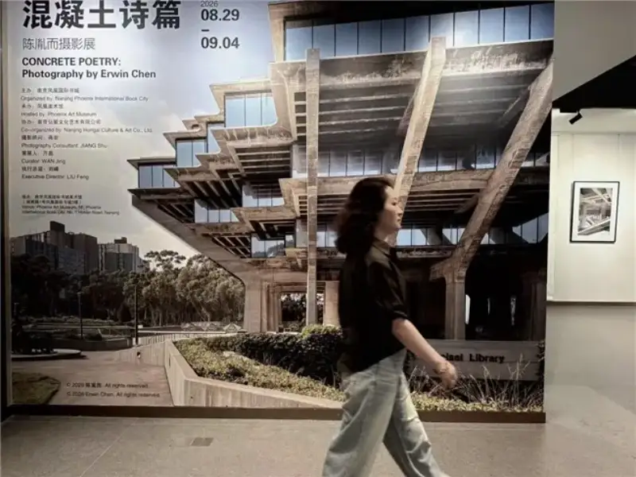
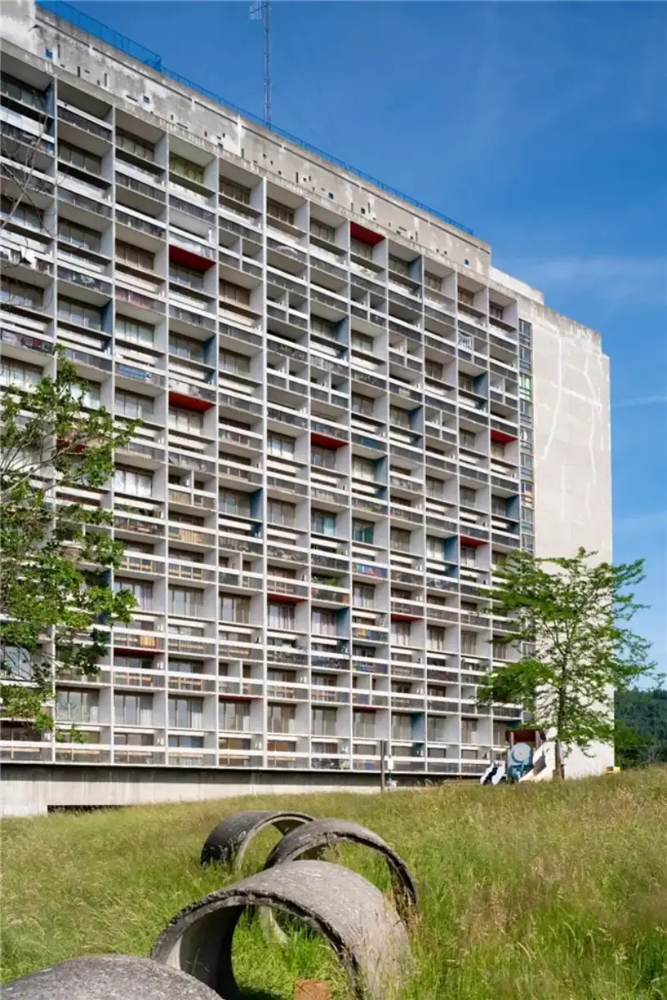
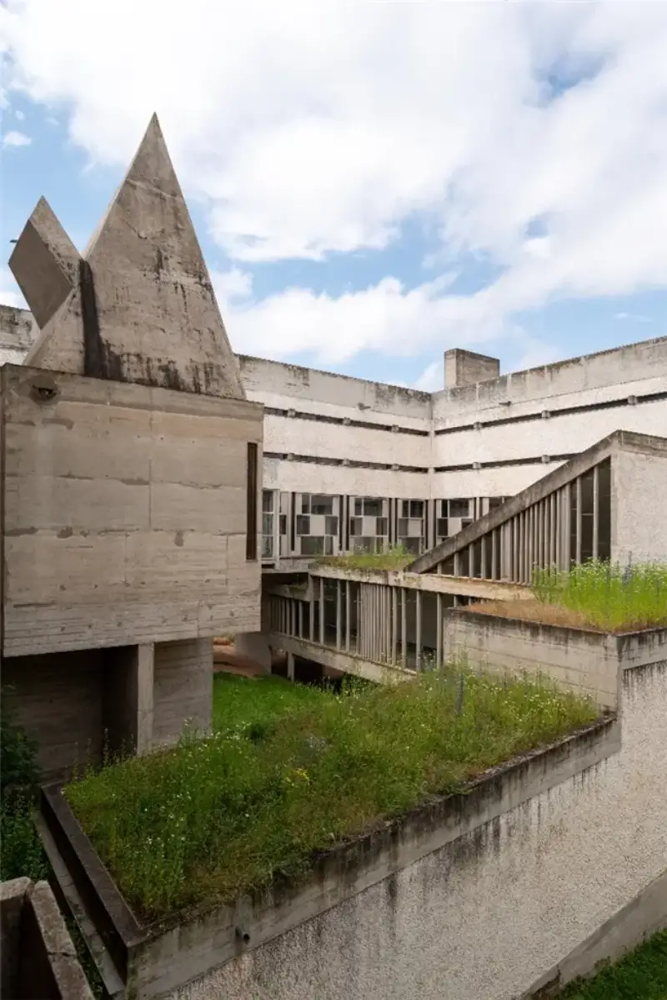
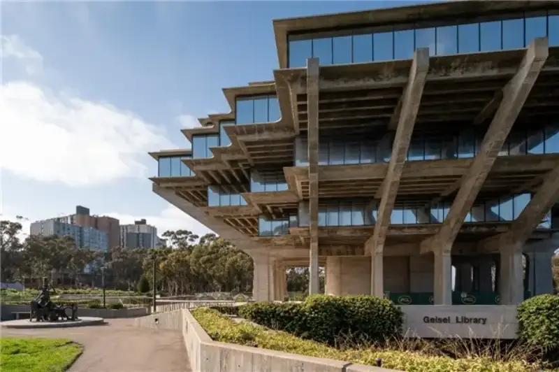
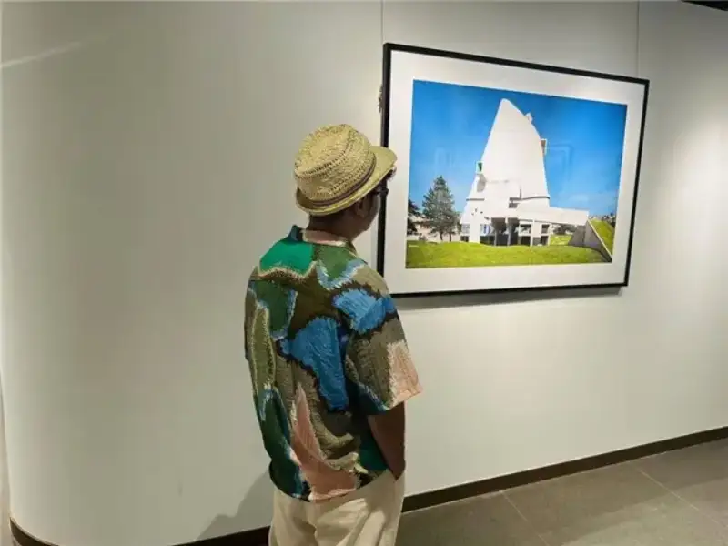

The exhibition Concrete Poems: A Solo Photography Exhibition by Chen Yiner closed on September 22. It ran from September 6 to 22 at the Chaojian Art Village in Yancheng. Its first stop was the Phoenix International Book City Art Museum in Nanjing, from August 29 to September 4. The show focuses on Brutalism, a style that uses bare, rough concrete. It traces a modernist path from Europe to the Americas, from housing ideals to public buildings.

The exhibition has four sections. The first section shows the housing units that Le Corbusier built in Marseille, Firminy, and Nantes. It also shows classic works such as the Saint-Pierre Church and the La Tourette Convent. The second section moves to French public housing after the war. It records the grid-pattern apartment blocks in the suburbs of Paris, and the Ivry-sur-Seine housing complex called The Stars of Ivry, designed by the architect Jean Renaudie. The third section crosses the Atlantic. It includes Boston City Hall, the Hurley Building, and the Salk Institute. These works show how American Brutalism shaped public buildings. The fourth section is called Fortress of Knowledge. It focuses on four libraries built during the Cold War education boom. Thick concrete becomes the physical home of public knowledge and humanist values.



The exhibition drew many fans of photography and architecture. Chen Yiner is a young photographer who has stood out in recent years for his work in architectural photography and image research. Experts in architecture, photography, and culture have praised the texture and mood of his work. Jiang Shu is a winner of the China Photo Gold Award and president of the Jiangsu Art Photography Society. He said: 'I pay special attention to the contrast of hardness and softness that repeats through the work. On one side are huge, thick, rough concrete structures. On the other side are sunlight, plants, grass, and the small marks left by daily life. Buildings are fixed, but life moves. Concrete is hard, but time, light, and plants keep changing it. These details remind us that even the grandest building finally enters daily life. Even the firmest ideal finally enters time. So I read Concrete Poems as a visual dialogue between ideals and reality, between history and the present, between architecture and life.' Zhao Zhen is director of the Jiangsu Modern Art Museum. He said: 'Chen Yiner spent two years traveling to record Brutalist landmarks in Europe and America. His images balance the heaviness of exposed concrete with the soft poetry of light, shadow, and plants. The work breaks the cold, rigid image that Brutalist buildings usually have.' Luo Lala is a writer and scholar of Kunqu opera. She read a quiet power in the work called Glendale Central Library. She said: 'The image gives up the big story. It only catches a beam of sunlight as it falls between a white desk and a blue screen. It is like human thought reaching into a small, hidden corner. The small shows the large.'
This body of work rests on years of study in architectural photography. Chen Yiner was born to a father from Nanjing and a mother from Yancheng. He moved to the United States in eighth grade. He earned a bachelor's degree in fine arts from the NYU Tisch School of the Arts, and a master's degree in arts from the NYU Institute of Fine Arts. He worked at Esto Photographics. Esto was founded by the great architectural photographer Ezra Stoller, and it has long recorded and archived important buildings. There Chen worked as an image archivist, researcher, and photographer. He held important responsibilities in the studio's work. At Esto, he reviewed and studied the archive of Stoller's architectural images. He digitized and organized the film left by Bill Maris, Stoller's long-time assistant. He also traced the history and changes of each building shown in the images. His research, organization, and later collection work helped these historical images enter the collection of the National Building Museum in the United States. In addition, he keeps returning to the buildings that Esto photographers recorded. He takes new images that show their present condition.
Chen brought two core archiving skills into his own photography: identification and comparison. His master's thesis was on Stoller's late architectural photography and its legacy. His double training, to photograph buildings and to study them, gives his images both a documentary eye and a sense of history. This method, which joins archive research, architectural history, and photographic practice, has become his own recognizable working path. His long practice of recording how a building looks today also makes Concrete Poems more than a tour of one style. It is an ongoing look at how buildings age, how people use them, and how they are judged again over time.
This way of observing also offers a reference for local issues. Many experts say Chen links historical archives with present-day city spaces through his cross-regional architectural photography. His work is not only visual expression. It also records architectural history and observes public culture. Zhang Jiangeng is a veteran journalist and professor of journalism and communication. He says Brutalism also has its own life in China. It lives in the industrial factories and Soviet-style school buildings of the 1950s. It lived again in the quiet return of interior design and public spaces after reform and opening up. Now it faces new chances in city renewal, the rebuilding of historic districts, and the rise of cultural tourism.

'I want to use images to study modern and contemporary architecture and public space in the East and the West. I want to release energy for the human record of city building,' Chen Yiner said.
Photo captions:
1. Exhibition poster
2. Housing unit in Nantes
3. Housing unit in Firminy
4. Geisel Library, University of California, San Diego
5. La Tourette Convent
6, 7, 8, 9. A corner of the gallery